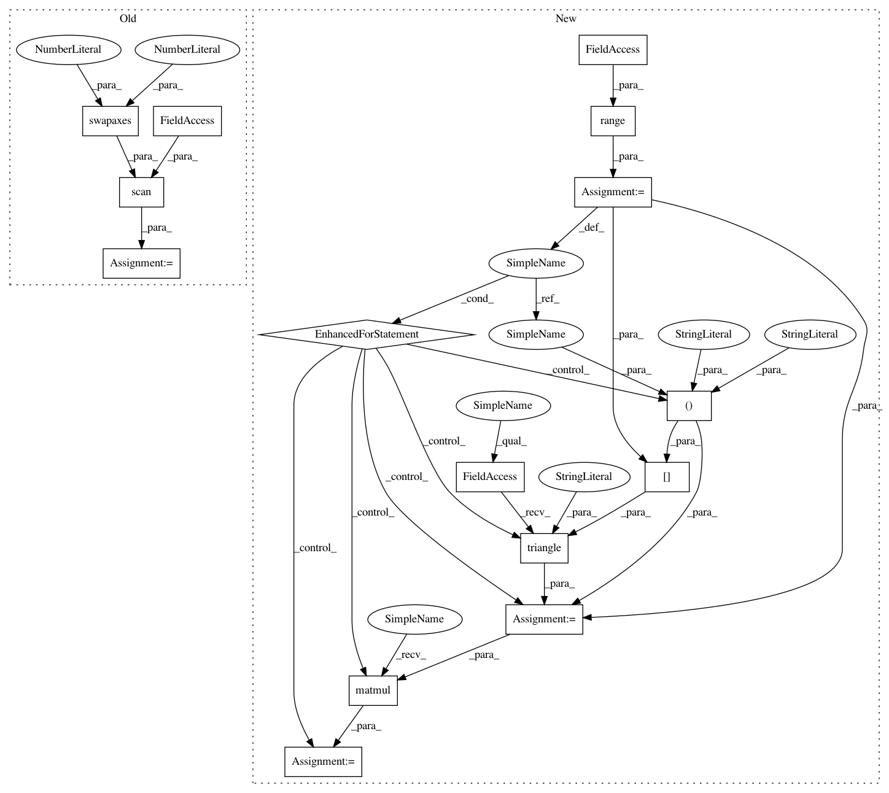

c1860af35fe694e5ce963cd8a3a7aa898f1c34c0,GPflow/conditionals.py,,gaussian_gp_predict,#,50
Before Change
W = tf.triu(w)
WB = tf.matmul(W, B)
return tf.reduce_sum(tf.square(WB), 0)
projected_var, _ = theano.scan(f, q_sqrt.swapaxes(0,2))
fvar += tf.transpose(projected_var)
return fmean, fvar
After Change
elif q_sqrt.get_shape().ndims==3:
// we have the cholesky form for q(v)
projected_var = []
for d in range(num_columns):
L = tf.user_ops.triangle(q_sqrt[:,:,d], "lower")
LTB = tf.matmul(tf.transpose(L), B)
projected_var.append(tf.reduce_sum(LTB,0))
fvar += tf.transpose(tf.pack(projected_var))
return fmean, fvar
In pattern: SUPERPATTERN
Frequency: 3
Non-data size: 15
Instances
Project Name: GPflow/GPflow
Commit Name: c1860af35fe694e5ce963cd8a3a7aa898f1c34c0
Time: 2016-01-18
Author: james.hensman@gmail.com
File Name: GPflow/conditionals.py
Class Name:
Method Name: gaussian_gp_predict
Project Name: GPflow/GPflow
Commit Name: c1860af35fe694e5ce963cd8a3a7aa898f1c34c0
Time: 2016-01-18
Author: james.hensman@gmail.com
File Name: GPflow/conditionals.py
Class Name:
Method Name: gaussian_gp_predict_whitened
Project Name: GPflow/GPflow
Commit Name: c1860af35fe694e5ce963cd8a3a7aa898f1c34c0
Time: 2016-01-18
Author: james.hensman@gmail.com
File Name: GPflow/conditionals.py
Class Name:
Method Name: gaussian_gp_predict
Project Name: GPflow/GPflow
Commit Name: a9273fb766562261b2ccedb635c71363fb10f06c
Time: 2016-01-18
Author: james.hensman@gmail.com
File Name: GPflow/svgp.py
Class Name: SVGP
Method Name: build_likelihood